What is happening here?
The Discrete Fourier Transform (DFT) takes a complex shape (like a drawing) and breaks it down into a series of simple rotating circles, called epicycles. When you connect the tips of all these rotating circles together, they trace out your original drawing!
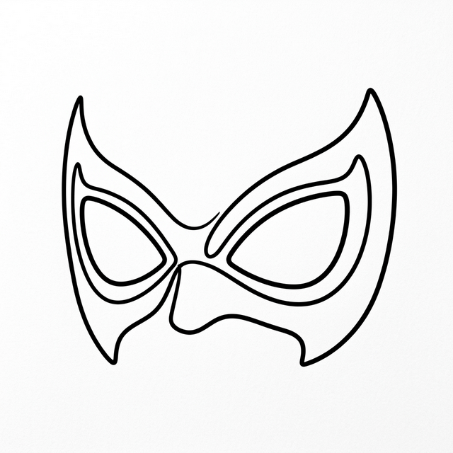
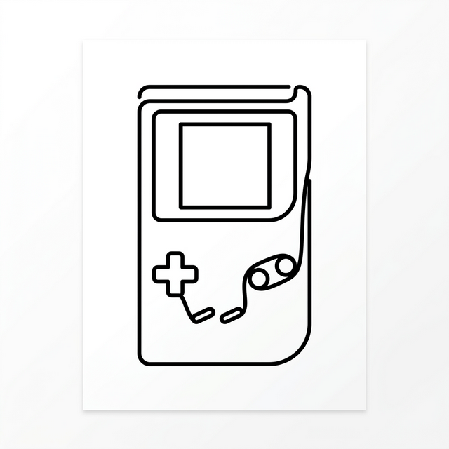
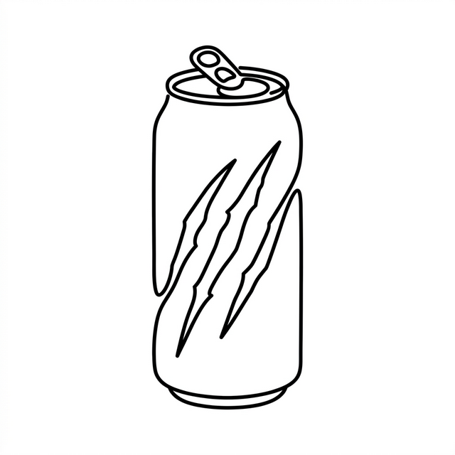
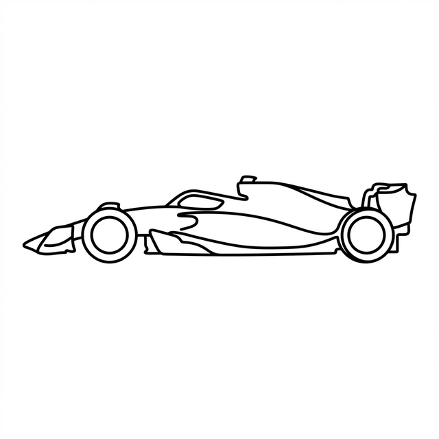
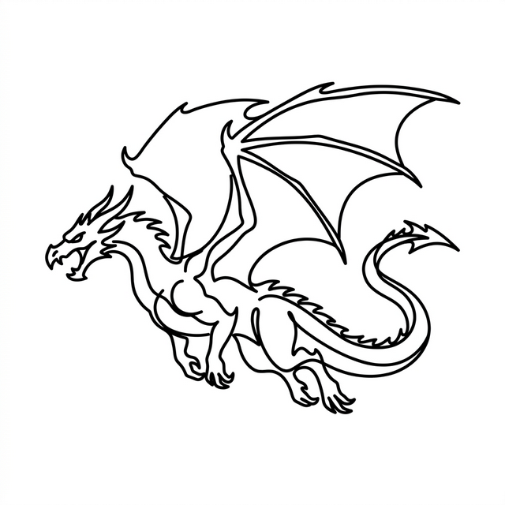
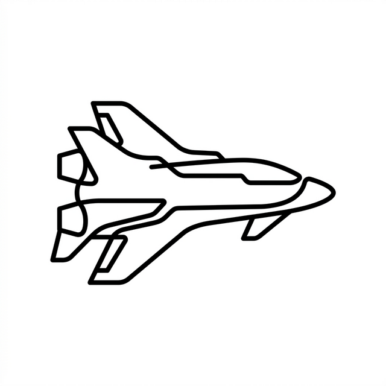
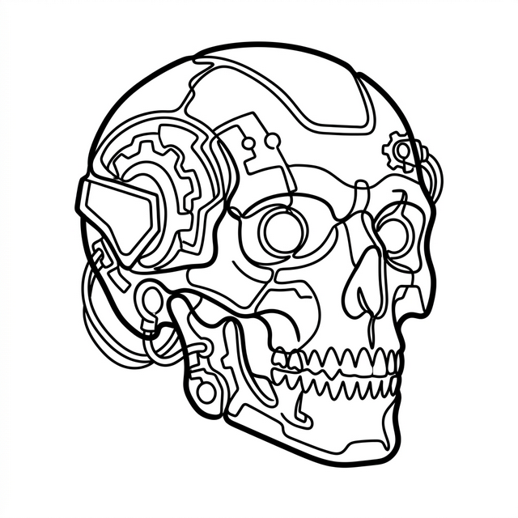
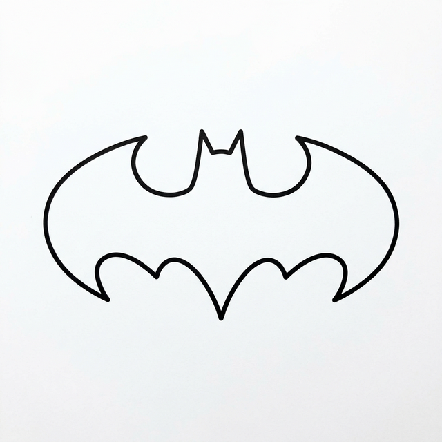
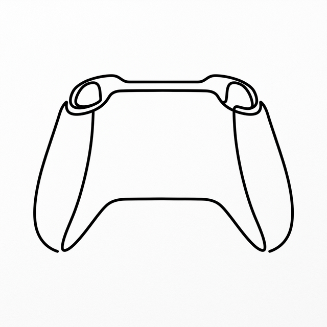
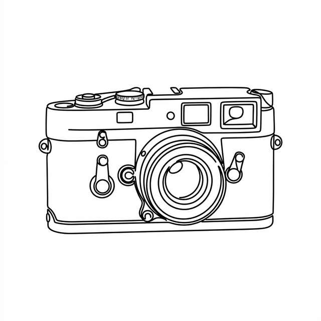
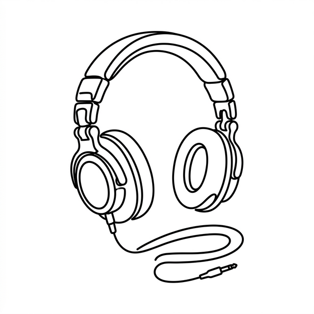
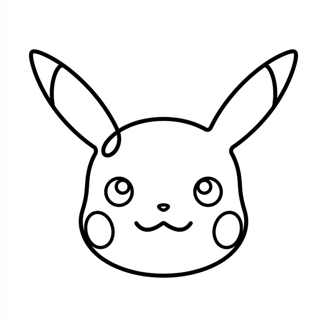
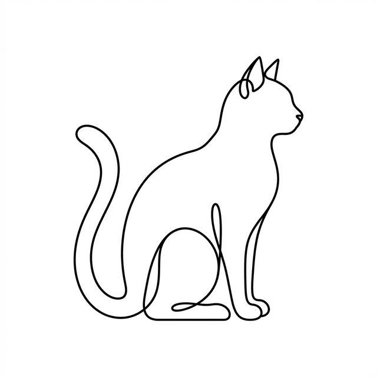
What works best?
WORKS GREAT
- Simple silhouettes
- Continuous single-line drawings
- High contrast line-art
- Logos with clear outlines
WORKS POORLY
- Group photos showing many people
- Images with messy backgrounds
- Detailed landscapes
Why? The edge detector gets confused with too much detail. It needs a single continuous path.
The Math Behind the Magic
Instead of mapping an image purely by its X and Y physical coordinates, we can mathematically treat the entire continuous edge of a line drawing as a single sequence of complex numbers on an imaginary 2D plane.
When we apply the Discrete Fourier Transform (DFT), we take this complex spatial path (the "time-domain") and convert it into the "frequency-domain". The algorithm outputs a structured list of pure frequencies. For each frequency, the math determines an amplitude (the exact size of the circle) and a phase (its precise starting angle offset).
By chaining these spinning circles (epicycles) end-to-end, organized from largest to smallest, we recreate the magic. As time ticks forward and the circles rotate at their specific speeds, the tip of the final circle exactly traces our original shape! It's effectively turning a spatial drawing into sound-like frequencies and playing it back as an animation.
For an incredible visual deep-dive into this mathematics, check out the brilliant video "But what is a Fourier series?" by 3Blue1Brown.